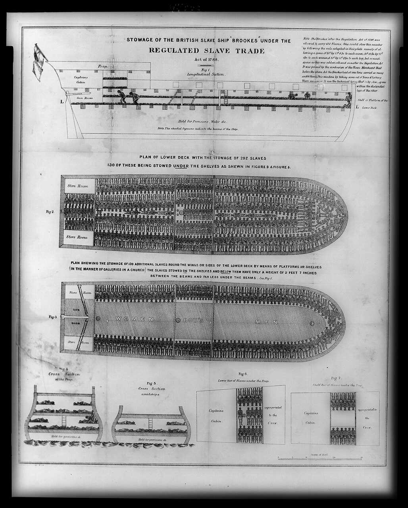

Directions: Study the plate and the background, then answer the questions.

Background. This plate was printed in 1788 by British abolitionists, members of the Society for Effecting the Abolition of the Slave Trade, and circulated across Britain and America. It shows the Liverpool slave ship Brookes in section and in deck plans. Its own printed note states that after the Regulated Slave Trade Act of 1788 the Brookes was allowed to carry 454 people, allowing a space of six feet by one foot four inches to each man, and that before the act she had at one time carried as many as 609 people. The figures in the plans are drawn lying in rows, in the space the note describes. A year after the plate appeared, Olaudah Equiano published his narrative of the same crossing in London.
1. Describe what the plate shows, and explain who printed it and for what purpose. Use the plate's own note: how many people was the Brookes allowed after 1788, how many had she carried before, and how much space does the note allow each man?
2. State the Trans-Atlantic Slave Trade Database's two estimates for the whole trade, and define the Middle Passage as the guided notes state it.
3. The people in this plate who survived the crossing entered a legal system built in the 1660s. State what Virginia's statutes of 1662 and 1667 each declared, and define chattel slavery as the guided notes state it.
4. Define the task system as the guided notes state it, and explain how the Stono Rebellion and the Negro Act of 1740 stand as the two sides of lowcountry slavery in 1739 and 1740.
1. Describe the plate, its makers, and its purpose. The plate shows the Brookes in longitudinal section and in deck plans, with enslaved people drawn lying in rows in the stowage space. It was printed in 1788 by the Society for Effecting the Abolition of the Slave Trade, British abolitionists, to show the public how enslaved people were carried. Its note states that after the Regulated Slave Trade Act of 1788 the Brookes was allowed 454 people, that before the act she had carried as many as 609, and that the allowance was six feet by one foot four inches to each man. Credit requires the purpose and all three figures. (Blueprint 11)
2. State the Database's two estimates and define the Middle Passage. The Trans-Atlantic Slave Trade Database estimates that some 12.5 million Africans were forced aboard slave ships between the 1500s and the 1800s and that about 10.7 million survived the crossing. The definition must match the guided notes: the voyage across the Atlantic that carried enslaved Africans to the Americas, the middle leg of the Atlantic trade, made in crowded ships where disease and abuse killed many of those aboard. Both figures must be identified as the Database's estimates. (Blueprint 11)
3. State the two Virginia statutes and define chattel slavery. The statute of December 1662 declared that all children born in the colony would be held bond or free only according to the condition of the mother. The statute of September 1667 declared that baptism did not alter a person's condition of bondage or freedom. The definition must match the guided notes: the system in which enslaved people were legally treated as property, bought, sold, and inherited, and in which their children were born enslaved for life. (Blueprint 11)
4. Define the task system and set Stono against the Negro Act. The definition must match the guided notes: the labor system of the South Carolina and Georgia lowcountry in which enslaved workers were assigned a daily task and, when it was finished, had the remaining time for their own work. In September 1739 enslaved Africans seized weapons near the Stono River and marched for Spanish Florida and its promised freedom; South Carolina answered in 1740 with the Negro Act, forbidding enslaved people to assemble, to move without a ticket, to earn money, or to be taught to write. Full credit requires the definition and both halves, the rising and the code that answered it. (Blueprint 12)
Teacher note. This check is formative. Question 1 is the observation diagnostic: students who cannot say who printed the plate and why have read an abolitionist argument as a neutral diagram. Questions 2 and 3 predict success on the blueprint 11 half of the unit test, and question 4 on the blueprint 12 half, because each requires the estimates, the statutes, and the definitions in the student's own words.